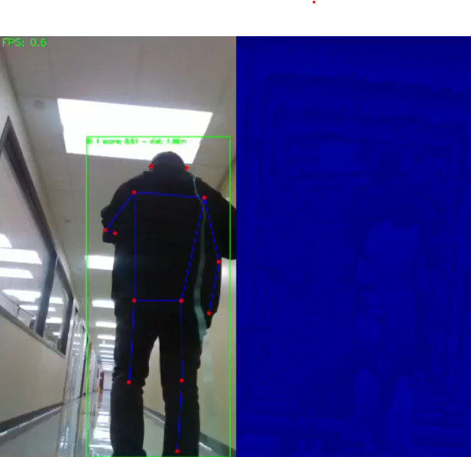
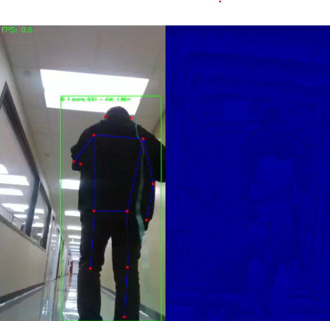

System Overview
Mobile Platform
The Unitree Go2 quadruped robot is selected as the mobile base for its ability to traverse uneven terrain, step over obstacles, and operate safely in cluttered indoor environments where wheeled robots may struggle. With a weight of approximately 15 kg (including battery) and configurations offering integrated LiDAR (e.g. XT-16) and high AI compute (e.g. 40-100 TOPS), Go2 is well-suited for embedded autonomy
Robotic Arm and Gripper
We propose to use the Unitree D1-T 6-DOF arm, which is lightweight ( 2.37 kg), has a reach up to 670 mm (including gripper), payload 500 g, and supports position, velocity, and force control modes. Power consumption is 60 W with a 24 V supply
Perception Suite
To increase the effective field of view, we plan to use a pair of RGB-D cameras mounted with overlapping vertical fields of view. Their outputs will be fused through a computer-vision–based image stitching and depth registration process to generate a combined wide-angle RGB-D stream for improved situational awareness. This fused view, together with a 360° Hesai XT-16 LiDAR, will provide complementary information for patient detection and tracking, cable geometry and dynamics estimation, and environment mapping. We plan to employ YOLOv11 — a recent model from Ultralytics providing state-of-the-art object detection and segmentation — which is capable of running at real-time frame rates on embedded AI platforms such as the NVIDIA Jetson Orin NX

 
